地政学
ヤレンは正式首都ではありませんが、議会、行政、空港が集まるナウルの対外窓口です。台湾、豪州、太平洋諸国との外交、海面上昇、漁業権、援助、移民政策が、島の小さな道路へ現れます。要衝として日々動きます。
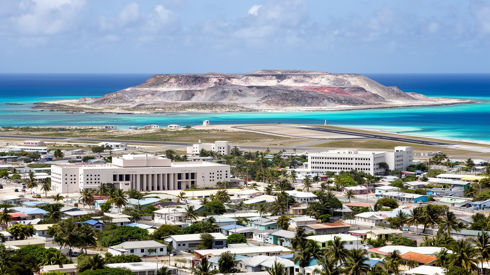
🇳🇷 ナウル / ヤレン地区 / World City Atlas
正式な首都を持たないナウルで、議会、行政機関、空港、学校、博物館、モクア洞窟が集まる南岸の行政地区。小さな島国の国家機能、海岸生活、リン鉱石後の土地、太平洋外交が凝縮します。
都市の骨格
ヤレンは巨大都市ではなく、ナウルの国家機能が南岸の短い道路沿いに集まる場所です。議会、空港、学校、警察、海岸、台地の跡地が歩ける距離にあり、国の制度と島の生活がほぼ同じ縮尺で見えます。
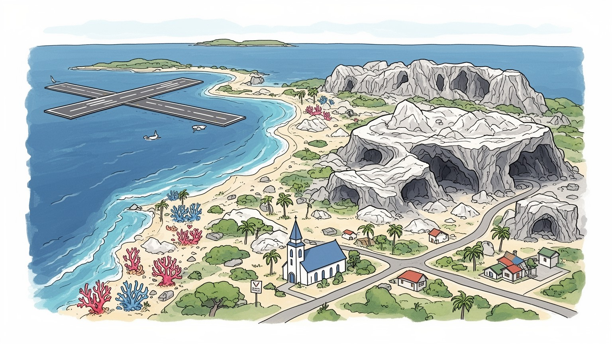
ヤレンは正式首都ではありませんが、議会、行政、空港が集まるナウルの対外窓口です。台湾、豪州、太平洋諸国との外交、海面上昇、漁業権、援助、移民政策が、島の小さな道路へ現れます。要衝として日々動きます。
雇用は公務、空港、学校、商店、港湾、漁業、観光、援助事業が中心です。リン鉱石後の島では、買い物の棚や輸入価格、若者の進路が一つの事業変更にも左右されます。夜の店や親族の支援も島の家計を支えています。
ナウル語と英語、教会、家族儀礼、学校、スポーツ、海辺の集まりがヤレンの社会を形作ります。キリスト教の暦と島の共同体、太平洋の親族関係、植民地と戦争の記憶が、日常の会話に重なります。歌声も響きます。
旅行者はモクア洞窟、博物館、戦跡、海岸、空港の近い島の尺度を歩きます。住民の日常は暑さ、潮風、輸入食品、医療、飲料水、雇用、健康、若者の教育機会と結びつきます。短い移動にも島の制約が強く見えます。
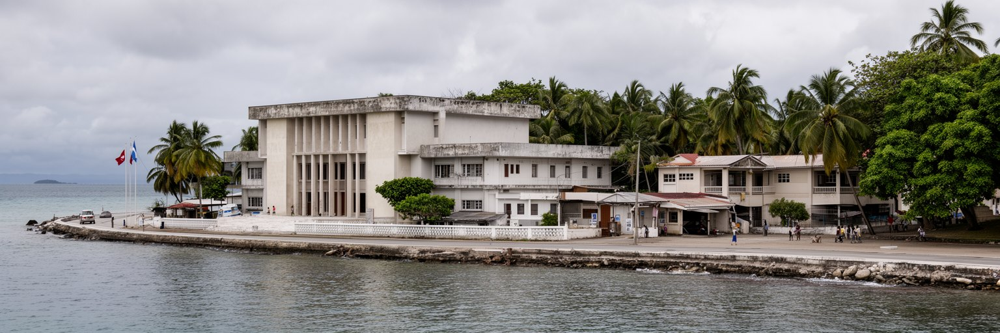
ヤレンを理解する時、まず重要なのは、ナウルには法的な意味での首都が置かれていないことです。島には大都市も地方都市もなく、十四の地区が海岸沿いと内陸の限られた土地を分け合います。その中でヤレンは議会、行政事務所、警察、消防、外交関係の施設、空港に近い公共機能を抱えるため、実質的な行政中枢として扱われます。ここでいう都市性は高層ビルや人口密度ではなく、国家の窓口が短い道路と低い建物に集中することから生まれます。住民、議員、公務員、教師、空港職員、訪問者が同じ商店や教会や海岸を使うため、政治と日常の距離は極端に近いです。政策の失敗や財政の遅れは抽象的なニュースではなく、親族や隣人の仕事、学校、輸入品の価格にすぐ響きます。ヤレンは首都らしく見えないからこそ、小さな国家がどのように制度を保ち、外部世界と交渉し、島の生活を支えるかをよく見せる場所です。行政の近さは利点でもあり、監視や説明責任の難しさでもあります。顔の見える社会では、苦情や要望が早く届く一方、政治的な対立や家族関係も仕事へ影響しやすいです。だからヤレンの公共空間には、透明な手続き、開かれた情報、誰もが使える学校や診療や道路を守る意味が強く宿ります。この近さは、住民が国家を遠い制度ではなく、日々の約束として感じる理由にもなります。制度の入口が近いほど、公平さを保つ努力も目に見えます。
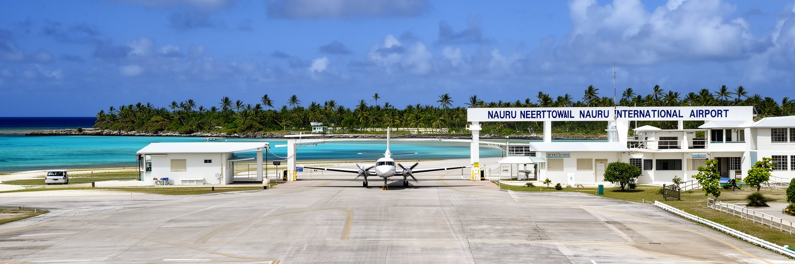
ヤレンの空港は、ナウルの孤立と接続を同時に示す施設です。島は赤道の南、広い太平洋の中にあり、船便と航空便の間隔が生活の予定を決めます。ナウル国際空港は旅客、医療搬送、外交、留学、援助関係者、貨物、郵便、緊急時の移動を担い、滑走路は南岸の狭い土地を横切るように存在します。到着した旅行者は、空港から数分で議会や学校、海岸、住宅地に触れるため、国境を越えて入った感覚と小さな島の近さを同時に味わいます。航空便が減ればホテル、商店、行政手続き、医療紹介、家族訪問まで影響を受け、燃料や部品の調達も課題になります。空港は観光の入口である前に、島国が外部世界から切れないための生命線です。ヤレンの道路を読むことは、滑走路、税関、送迎車、学校の登下校、海岸の散歩がほぼ同じ都市空間を共有する特異な縮尺を読むことでもあります。空港の存在は土地利用にも強い制約を与え、騒音、安全、道路横断、緊急車両の動きまで暮らしに入り込みます。ですが同時に、島外の病院へ向かう患者、帰省する学生、国際会議へ出る職員にとっては希望の通路でもあります。ヤレンでは滑走路が都市の端ではなく、生活圏の中心近くにあります。便数の少なさは不便である一方、到着と出発の時間を島全体が意識する独特のリズムも生みます。エンジン音、送迎車のライト、荷物を待つ夜のざわめきは、商店の棚や家族の予定にもすぐ表れます。
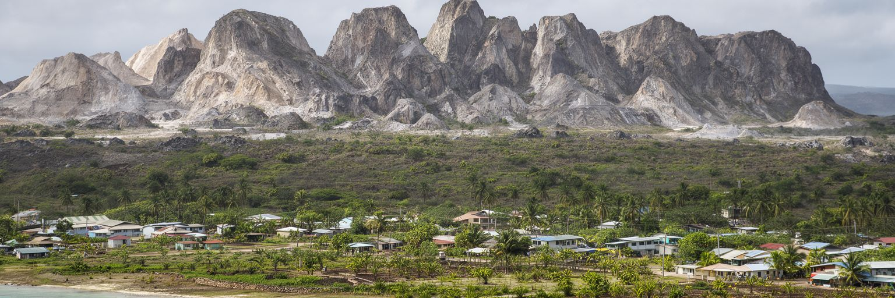
ナウルの近代史を読むうえで、リン鉱石は避けて通れません。鳥の糞が長い時間をかけて作ったリン鉱床は、植民地支配、信託統治、独立後の国家財政を支え、一時は小さな島に大きな富をもたらしました。しかし採掘は内陸台地を深く変え、鋭い石灰岩の柱、使いにくい土地、表土の喪失、再生の難しさを残しました。ヤレンは採掘の中心地そのものではありませんが、南岸の行政地区として、資源収入の使い道、土地回復、雇用、輸入依存、将来世代への責任を引き受ける場所です。リン鉱石の時代に得た富が、十分に長期の公共資産へ変わらなかったことは、島の財政と社会の記憶に残ります。今日のヤレンでは、行政施設や学校の背後に、採掘後の地形と海岸の限られた居住地が迫ります。白く乾いた台地の光は、海岸の湿った暑さと対照をなし、土地の使いにくさを身体で感じさせます。採掘後の土地を再生するには、土壌、雨水、植生、所有権、費用、技術を長く扱わなければなりません。使える土地が少ない国では、復元の遅れが住宅、農業、公共施設、廃棄物処理の選択肢を狭めます。ヤレンの行政は、過去の富の清算ではなく、未来の土地をどう取り戻すかという具体的な課題に向き合っています。島の若者が将来どこに住み、何を育て、どんな仕事を作れるかも、この土地再生の成否に左右されます。富の記憶は、責任の記憶でもあります。
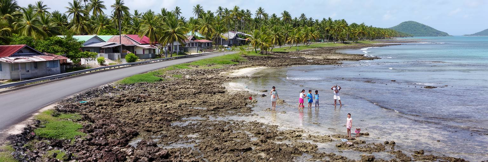
ナウルの居住可能な土地は、採掘で荒れた内陸台地と外洋の間にある細い海岸低地へ強く集中します。ヤレンもその一部で、住宅、道路、公共施設、学校、商店、教会、空港、海への入口が短い帯状の空間に並びます。海は食料、涼しさ、記憶、遊び、交通の感覚を与えますが、高潮、浸食、塩害、サンゴ礁の変化、廃棄物処理の難しさも運びます。島が小さいため、どこに住むか、どこに建てるか、どこへ水を流すかという判断が国全体の問題になります。低地の道路が傷めば、通勤や通学だけでなく、空港、議会、診療、買い物が同時に不便になります。ヤレンの生活は、都市と村、行政と近所、海岸と国家が分かれない縮尺で成り立ちます。住民は家族や教会を通じて助け合い、暑さと湿気の中で日陰、水、輸入食品、車、修理、通信をやりくりします。夕方の潮の匂い、店先の冷房、子どもの遊ぶ声も生活の一部です。気候変動で海面や波の力が変われば、庭先、墓地、道路、電線、公共施設まで守り方を考え直す必要があります。移転できる内陸地が限られるため、護岸、排水、土地利用、住宅改修は単なる土木ではなく社会政策になります。海岸低地の暮らしは、島の文化を支える一方で、将来の選択肢を最も早く試される場所でもあります。海を眺める日常と、海から守る計画が同じ場所で重なることが、ヤレンの都市感覚を作っています。浜辺の変化は、家の前の小さな出来事であり国家課題でもあります。
ヤレンの旧名に関わるモクア洞窟とモクア井戸は、島の水を考えるうえで象徴的な場所です。石灰岩の島では淡水資源が限られ、雨水、地下水、輸入や浄水設備、貯水の仕組みが暮らしを左右します。モクアの地下水は、戦時中や危機の記憶とも結びつき、単なる観光名所ではなく、ナウル人が厳しい環境で水を得てきた歴史を示します。海に囲まれていても飲める水は貴重で、塩水化、干ばつ、施設の故障、電力不足はすぐ生活問題になります。ヤレンの公共施設が集まる南岸で水を読むことは、国の安全保障を読むことでもあります。学校、診療、空港、家庭、宗教行事、来訪者の受け入れは、安定した水なしに成り立ちません。洞窟の静けさは、熱帯の明るい海岸とは違う時間を持ち、島の内側に残る自然と記憶を感じさせます。小さな国では、水源の保護、廃棄物管理、気候変動への備えが、景観保全ではなく日常の命綱になります。水をめぐる課題は、家庭の貯水タンク、学校の衛生、医療施設の清掃、観光客の受け入れ能力まで広がります。雨が多い季節でも、安全に保管し、汚染を防ぎ、停電時にも使える仕組みがなければ安心は続きません。モクアの水の記憶は、島の自立が自然条件の理解と保全に支えられていることを教えています。水場をどう扱うかは、観光の礼儀、環境教育、災害への備えを結び、ヤレンの公共心を育てる課題でもあります。
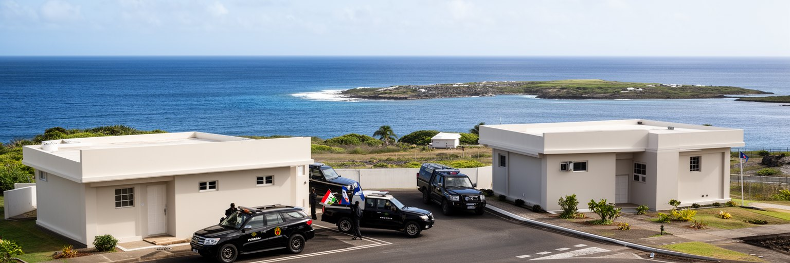
ナウルは人口も面積も小さいが、国連で一票を持つ主権国家であり、ヤレンはその外交実務が見える地区です。台湾との関係、オーストラリアとの結びつき、太平洋諸国との連携、気候変動交渉、海洋資源、漁業権、開発援助、移民政策は、島の財政と生活に直接関わります。大国から見れば小さな点でも、ナウルにとって外交は医療搬送、教育奨学金、インフラ整備、燃料、通信、災害対応を支える現実的な手段です。ヤレンの行政施設や公館は大規模ではありませんが、そこで扱われる案件は広い太平洋と国際政治へつながります。援助は道路や公共施設を整える一方、依存や政策選択の難しさも生みます。小国外交を読む時、単にどの国と親しいかを見るだけでは足りません。限られた行政人員が、複数の国際課題を同時に処理し、島の住民に具体的な利益として戻せるかが問われます。ヤレンは、太平洋の主権が日常の行政能力と結びつく場所です。外交の成果は共同声明よりも、発電施設が動くか、奨学金が続くか、災害時の支援が早いかで測られます。小国は交渉相手を選びにくい場面も多く、援助条件と主権の余地の間で慎重に判断します。ヤレンの静かな庁舎には、世界政治の圧力と島民の生活を同時に扱う重さがあります。国際会議で語られる気候正義も、島では護岸、発電、水、医療、通信の具体的な支援として期待されます。外交は暮らしの技術です。
ヤレンには学校や学習施設が集まり、ナウルの若者にとって重要な教育拠点となります。小さな島では、学年が進むほど進路の選択肢は限られ、専門教育、大学、医療、技術職を目指すには海外留学や遠隔教育に頼る場面も多いです。学校は知識を教えるだけでなく、ナウル語と英語、家族の期待、教会、スポーツ、健康、職業訓練、島外との接続を結ぶ場所です。昼休みの競技場、SNSで見る海外の学校生活、ラジオで聞く島のニュースも、子どもたちの世界を広げます。若者は公務、空港、商店、漁業、教育、医療、援助事業などの仕事を見ながら将来を考えるが、雇用の小ささは不安にもなります。外へ出れば機会が広がる一方、家族と島への帰属をどう保つかという問いが残ります。ヤレンの教育を読むことは、人口の少ない国家が次世代の専門人材をどう育て、帰って来られる仕事と生活環境をどう作るかを読むことです。教室の窓の外に空港と海が近いことは、若者の選択が常に島内と島外の間で揺れることを象徴しています。教育の質は、教員の確保、教材、通信環境、健康状態、家庭の収入にも左右されます。少人数の国では、医師、技術者、会計、法務、環境管理など一人の専門家が社会全体を支えることもあります。だから学校は、個人の進学だけでなく国家を維持する人材を育てる基盤でもあります。卒業後に戻りたいと思える職場、住宅、文化的な誇りを用意できるかが、島の人口維持にも関わってきます。
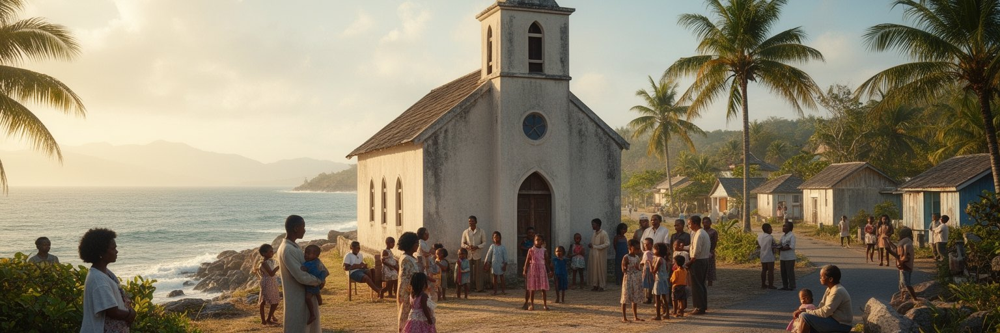
ヤレンの社会を形作る大きな力は、教会、家族、地区のつながりです。ナウルではキリスト教が生活暦に深く入り、礼拝、葬儀、結婚、祝祭、合唱、寄付、訪問、助け合いが日常のリズムを作ります。小さな島では人間関係が近く、良い意味でも難しい意味でも、個人の出来事が共同体の出来事になりやすいです。教会は祈りの場であると同時に、若者の活動、家族相談、災害時の連絡、病気や葬儀への支援、島外にいる親族との結びつきを保つ場でもあります。ナウル語と英語が行き交う礼拝や集会は、植民地、戦争、リン鉱石、独立、移住の記憶を次世代へ渡す回路になります。ヤレンを行政地区としてだけ見ると、この柔らかな社会基盤を見落とします。公共制度が小さい国では、共同体の支えが生活の安定に大きく関わります。ですが支え合いに頼りすぎれば、家庭の負担や若者の選択の狭さも生まれます。信仰と家族は、島の安心と課題を同時に映します。教会行事は音楽、衣服、食事、寄付、送迎を通じて地域経済にも関わり、帰省者や海外在住の親族との結びつきを強めます。困った時に誰へ連絡するか、葬儀費をどう支えるか、若者をどう見守るかという実務も、信仰共同体の中で調整されます。ヤレンの公共性は、制度と親密な関係の両方で作られています。近さゆえの息苦しさを和らげるには、若者や女性が声を出せる場も大切になります。共同体は支えであり、変化を話す場でもあります。
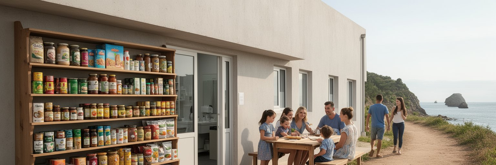
ナウルの社会問題として特に重いのが、食生活と健康です。リン鉱石収入の時代以降、輸入食品、加工食品、砂糖飲料、運動量の変化が広がり、肥満、糖尿病、心血管疾患は家庭と医療を圧迫してきました。ヤレンには学校、行政、空港、商店、診療に関わる機能が近く、健康政策の現場が小さな地区に集まります。島が小さいため、新鮮な農産物を大規模に作る土地は限られ、漁業や家庭菜園、輸入品の価格、公共啓発、学校給食、スポーツ活動が重要になります。商店の棚には缶詰や甘い飲料が並び、家庭の食卓では魚や輸入米、祝祭の料理が混ざります。健康をめぐる負担は個人の意思だけでは説明できません。食料の選択肢、所得、輸入物流、気候、教育、家族の習慣、医療へのアクセスが重なっています。ヤレンで健康を読むことは、豊かさの記憶と現在の脆さを同時に読むことでもあります。海岸を歩く人、学校で運動する若者、診療所の待合は、島国の都市生活が身体にどう表れるかを示しています。医療人材や専門治療を島内だけで十分に確保することは難しく、重い症例では海外搬送や外部支援が重要になります。その費用と手続きは家族に大きな不安を与えます。だから予防、早期診断、学校での食育、歩ける海岸道路、手頃な健康食品は、ヤレンの重要な生活政策になります。健康は診療所の中だけでなく、輸入の仕組み、運動できる道、家族の食卓で毎日作られています。
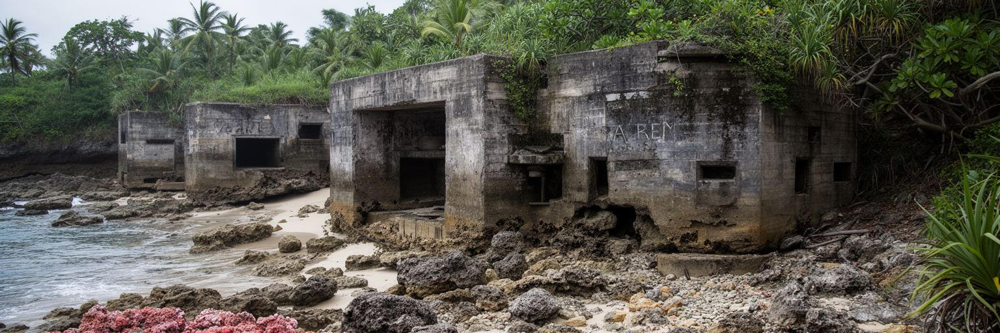
ヤレンとナウルの景観には、第二次世界大戦の記憶も残ります。日本軍の占領、強制移送、爆撃、飢え、病気、島民の分断は、今日の静かな海岸からは想像しにくいが、家族の語りや戦跡、記念の場に影を落としています。小さな島では、戦争による人口移動や施設破壊の影響が全社会に及びやすく、地下の水場や洞窟、海岸の砲台跡は、観光名所である前に生存の記憶を帯びります。ヤレンの行政地区は独立後の国家機能を示す一方で、植民地支配と戦時占領を経て主権を回復した歴史の上に立ちます。戦争の記憶を扱うには、珍しい遺物として消費するのではなく、島民の損失、移送された人々、戻った人々、語られにくい苦痛へ配慮する必要があります。ナウルのように小さな国では、世界史の大きな力が家族史のすぐ近くに残ります。ヤレンを歩く時、議会や空港だけでなく、静かな戦跡が示す脆さと回復の時間も都市の一部として読むべきです。戦後の独立は、行政制度を作るだけでなく、傷ついた共同体が自分の土地を再び語り直す過程でもありました。戦跡を保存するか、生活空間として使い直すかという判断にも、記憶と実用の間の揺れがあります。ヤレンの低い景観には、主権を取り戻した島の静かな重みが残っています。学校で歴史を学び、家族から体験を聞き、訪問者へ丁寧に伝えることが、記憶を観光消費から守る方法になります。静けさの中に痛みがあります。
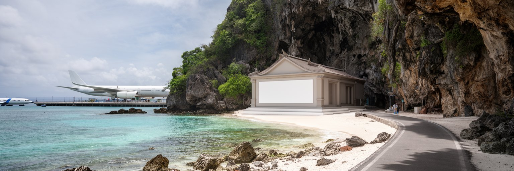
ヤレンの観光は、巨大なリゾートや長い名所リストではなく、島の尺度を体験する旅になります。空港からほど近い場所に議会、博物館、モクア洞窟、海岸、戦跡、学校、商店があり、短い移動の中で国家、自然、歴史、日常が重なります。旅行者は、ナウルに公式な首都がないこと、島の多くが採掘後の土地であること、海岸低地に生活が集まることを、地図より早く身体で理解します。観光には慎重さも必要です。小さな共同体では写真、服装、宗教行事、学校、行政施設、私有地への配慮が欠かせません。地元の店やガイドを使い、海岸や洞窟を汚さず、戦跡を尊重することが、訪問の質を決めます。ヤレンの魅力は、派手さではなく、太平洋の小国が限られた土地で主権と生活を保つ現実を近い距離で見せる点にあります。短い滞在でも、海岸の風、滑走路の近さ、教会の時間、議会の低い建物を結ぶと、島国の都市性が立ち上がります。観光収入を増やすには、宿泊、案内、交通、文化施設、環境管理を住民の暮らしと衝突させずに整える必要があります。来訪者の数が少ないからこそ、一人ひとりの行動が地域に与える印象は大きいです。ヤレンを訪れる旅は、消費する観光ではなく、小さな国の尺度を敬意をもって学ぶ時間になりうります。静かな場所ほど、歩く速度、話す声、写真を向ける先に、その人の理解が表れます。小さな旅ほど深く読めます。
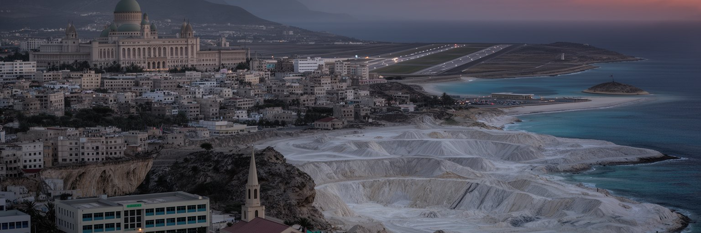
ヤレンは、都市という言葉の一般的なイメージをずらす場所です。人口は少なく、建物は低く、道路は短いです。それでも議会、行政、空港、学校、博物館、洞窟、海岸、戦跡が集まり、ナウルという主権国家の機能と記憶を凝縮しています。ここでは都市の重要性を人口や高層化で測ることができません。むしろ、狭い土地で国家を運営し、外部世界と交渉し、採掘後の環境を抱え、気候変動と健康問題に向き合い、若者に未来を残す力が問われます。ヤレンを読むには、正式首都ではない制度上の特徴だけでなく、島全体がほぼ一つの生活圏であることを見る必要があります。空港が止まれば医療や家族訪問が揺れ、輸入食品の価格が変われば健康と家計が揺れ、海岸の浸食は住宅と公共施設を脅かします。小ささは弱さであると同時に、問題のつながりを見えやすくする条件でもあります。ヤレンは、太平洋の小国が国家、共同体、環境を同じ地図で保とうとする姿を示す行政地区です。大都市のような匿名性がないため、政策の成果も失敗も人の顔を伴って現れます。そこには緊張もありますが、互いの事情を知る社会だからこそ生まれる調整力もあります。ヤレンを丁寧に見ることは、都市を規模ではなく責任の集中で読む練習になります。小さな行政地区に、二十一世紀の島国が抱える主権、環境、健康、移動、記憶の問いが詰まっています。